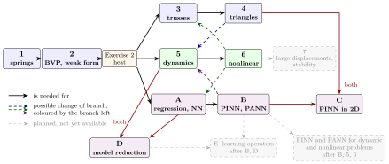

How to Read These Notes
These notes are a short introduction to the essentials of finite element modeling and of physics-based machine learning. They work with intuitive examples that are small enough to compute by hand, and they are modular: the core is told in one dimension, and from there separate branches continue to two-dimensional problems, to dynamics and nonlinear problems, to physics-informed and physics-augmented neural networks, and to reduced models that describe a whole solution field with a few numbers. Every important concept is introduced on a small example first, and only afterwards generalized to the form a computer uses.
Two perspectives to start with
The finite element method (FEM) can be looked at from several sides: as a structure built from many small springs, as the approximate solution of a boundary value problem, as the minimum of an energy, as a balance of virtual work. All of them describe the same method, and it helps to know more than one. These notes start with two.
The first is the picture of many small springs. A structure is cut into simple pieces, the elements, connected at nodes; each element acts like a spring, and forces and displacements are collected in a stiffness matrix. This needs little more than small systems of linear equations, and it already contains, in miniature, everything a commercial FEM program does: elements, assembly, boundary conditions, solving, post-processing. This is Lecture 1.
The second is the more formal view of a boundary value problem. A differential equation holds at every point of a body, with conditions on its boundary. It can rarely be solved exactly, so we look for the best approximation within a family of simple functions. This view explains why the method works, and it is the one that carries over to two and three dimensions, to heat flow, and to other physics. This is Lecture 2.
The two perspectives meet in one equation: the element stiffness matrix of a bar element of length \(h\), \[\mathbf{k}^{e}=\frac{EA}{h}\begin{bmatrix}1&-1\\-1&1\end{bmatrix},\] which Lecture 1 obtains from a drawing and Lecture 2 from an integral. When you can derive this matrix both ways and explain why the results agree, you understand the core of the finite element method. (The energy view accompanies both lectures.) Lectures 3 and 4 take the two perspectives into the plane: trusses, then triangles and quadrilaterals. Lectures 5 and 6 give up, one at a time, the two assumptions behind everything before them: that nothing moves fast, and that the stiffness does not depend on the answer. Lectures A to D carry the same ideas — ansatz, residual, least squares — over to regression and neural networks, to physics-informed and physics-augmented networks, and to model reduction.
The structure of the notes
Lecture 1 (springs and the stiffness method), Lecture 2 (elasticity as a boundary value problem), and Exercise 2, which replays Lecture 2 on steady heat conduction.
Lecture 3 (trusses in the plane) and Lecture 4 (plane elasticity, triangles, quadrilaterals).
Lecture 5 (mass, damping, and time) and Lecture 6 (nonlinear problems and Newton’s method), both on chains of a few springs and bars.
Lectures A, B and C connect the machinery to regression, neural networks, and the physics-informed and physics-augmented methods of current research. Supplements S1 and S2 are sets of worked, hand-scale examples belonging to Lecture B. Lecture D (model reduction) extracts a few shapes from many computed solutions and builds small models from them.
The lectures on the finite element method carry numbers; those on physics-based machine learning and model reduction carry letters. The printed order is only one of several reading orders (Fig. 1). After Lecture 2 and Exercise 2 the notes split into three branches that do not depend on one another:
into the plane: Lectures 3 and 4;
beyond linear statics: Lectures 5 and 6;
toward machine learning: Lectures A and B, with Supplements S1 and S2.
Take them in any order, or leave one out. The dashed arrows of the map show where one can change from the end of one branch to the start of another: from the triangles on to dynamics (the printed order); from the nonlinear lecture back to the trusses, or on to machine learning; from Lecture B to dynamics. Two lectures stand at the end of two branches each: Lecture C needs Lecture B and Lecture 4; Lecture D needs Lecture 5 and Lecture A. The grey boxes are topics that are planned but not yet part of these notes; they show where the branches are meant to meet again.

Companion exercises
The exercises are Jupyter notebooks, distributed with these notes. They contain gaps (...) to fill in and a self-check cell after each part. Each exercise is named after the lecture it accompanies.
| exercise | companion to | content |
|---|---|---|
| Exercise 2 | Lecture 2 | steady heat conduction: from physical relations to a 1D finite element solver |
| Exercise 5 | Lecture 5 | a small explicit dynamics code: modes, stability limit, a travelling wave, modal truncation |
| Exercise 6 | Lecture 6 | a small nonlinear solver: Newton, tangent checks, load steps, displacement control, contact |
| Exercise A | Lecture A | regression, residual versus error, gradient descent, a tiny neural network, overfitting |
| Exercise B1 | Lecture B, S1 | PINNs at hand scale: forward and inverse, ending in damage detection |
| Exercise B2 | Lecture B, S2 | a physics-augmented material network, checked by hand and used in a solver |
| Exercise B3 | Lectures 2, B | transfer to new equations: cooling fin, beam, eigenvalue problem |
| Exercise D | Lecture D | model reduction: a POD routine, reduced models by projection and by regression, a travelling front; optional 2D part |
The notebooks need Python with numpy, sympy and matplotlib; no machine-learning framework is required — every network in these notes is small enough to be written out in a few lines of numpy.
A word on style
We follow one rule throughout: never more than one new idea per step, and every idea first on the smallest example that shows it. Where a general formula appears, you have already computed its 2-node or 3-node special case by hand. If at any point a formula looks opaque, go back one example; the formula is only the example with the numbers renamed.
About these notes
These lecture notes are based on earlier drafts that were left unfinished and set aside due to a lack of time. They were revived with extensive use of AI, in particular Claude Code with Anthropic’s Claude Opus and Claude Fable models, which generated and rewrote text, figures and code under the author’s direction. The author is responsible for the content, and errors may remain. Please let me know about any errors, bugs or mistakes you find, and about suggestions for improvement or your experience of learning with these notes; the contact address is given on the course website.
Copyright © 2025 Ramses Sala.